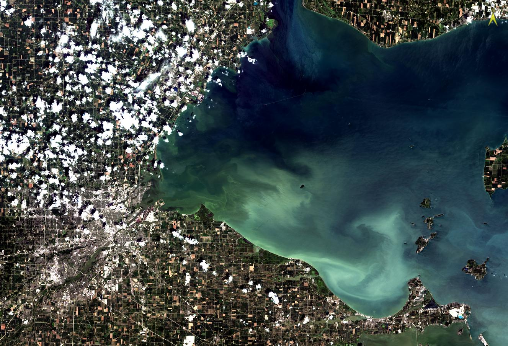
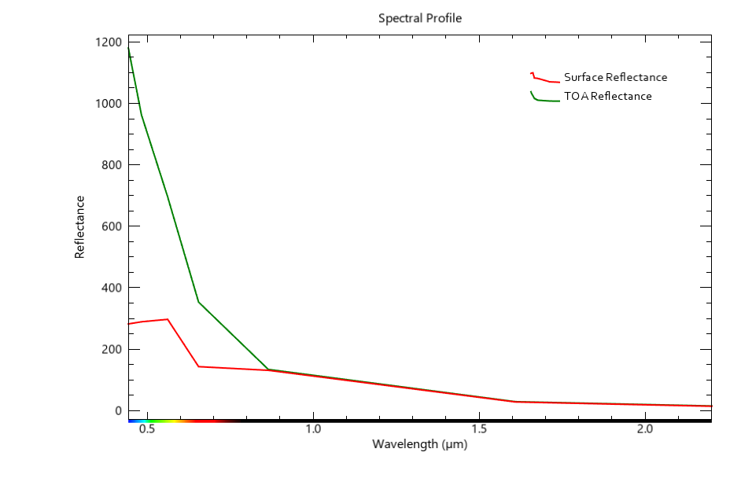
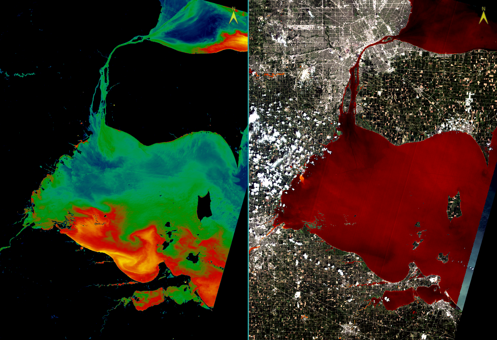

Lake Erie Algae Bloom of 2024
Adam Day | April, 2025
INTRODUCTION
In the summer of 2024, Lake Erie saw a large algae bloom develop and cover approximately 700 square miles of the western basin. The algae blooms have been a growing problem for Lake Erie since 2000, and are primarily driven by agricultural activities on the nearby region's farmlands. Alage blooms are measurable through remote sensing techniques, which is the aim of this project.
METHODS
This analysis began by obtaining Landsat 8/9 Level 1 product imagery of Lake Erie (41.720226, -83.432331) collected on August 04, 2024. Through the use of ENVI version 6.1, various tools were employed to calibrate and measure image data. A True Color image of the region was generated with a Contrast Stretch value of 5%, as shown in Figure 1 below. Calibration began with spectral reflectance, using a Top-of-Atmosphere Reflectance calibration type coupled with a scale factor of 10,000 to ensure whole integers for the data. Once calibrated, statistical measurements were taken and recorded, which are shown below in Table 1.
After calibration for spectral reflectance was complete, removal of atmospheric scattering effects was achieved using the ‘Dark Subtraction’ ENVI tool by using the minimum reflectance values for each of the respective bands as described in Table 1. This generated a .dat file similar to the spectral reflectance .dat file. With both the TOA reflectance file, and Dark Subtraction file generated, comparison between the two profiles was done using a water pixel located at the center of Lake Erie. Figure 2 below shows a Spectral Profile comparison chart between both raster files.
Next, the extent of the algae blooms throughout Lake Erie. A Region of Interest (ROI) encompassing the area of the lake’s water body profile was established using a pixel selection threshold of bands within the wavelength range of 0-500µm in the Near Infrared (NIR) band. This threshold at this band ensured only water pixels containing water were selected as water has a low reflectance value. Using this ROI as a backdrop, a new raster file was generated by masking the spectral reflectance raster file with this ROI water file. With the new raster file containing only water, a raster color slice was applied to the raster to visualize individual bands, effectively highlighting where the algae bloom concentrations are higher.
The final step in this analysis involved analyzing the water temperatures present in Lake Erie during this event. This was done using the Radiometric Calibration tool in ENVI, with a Brightness Temperature calibration type used for calibration. As before, the previously mentioned ROI was used as a mask to generate a greyscale-colored raster file with thermal data for the lake. By applying a gradient red colored color chart, surface water temperatures for the lake were visually highlighted with warmer areas appearing darker in color and colder areas appearing lighter. Figure 3 below is the outcome of these two applications and are meant to visually compare water condition of Lake Erie during August 04, 2024.
RESULTS
The results from this analysis highlight visual variations throughout the various images generated. Beginning with Figure 1, by using a contrast stretch of 5% on the true color image, this stretch reallocates the values of each pixel into a range between the bottom 5% and top 5% of all values, effectively highlighting the portion of the histogram where there is a greater concentration of color values. This allows more subtle colors to ‘pop’ into view and allows the viewer to easily visualize the algae blooms.
With regards to the spectral profile between the two surface reflectance images, the Surface Reflectance image appeared marginally darker than the TOA Reflectance image. This is quantified in Figure 2 as we can see that the TOA Reflectance image had a reflectance value of nearly 1200, while the Surface Reflectance image boasted a value of approximately 350. To further extrapolate this result, spectral Profile differences between various land cover features such as water, vegetation, and urban land confirmed this. Water hosted a higher reflectance value in the TOA Reflectance image with a reflectance value in the 0-0.8 range and a drop in value for both profiles beyond 0.8µm. Vegetation also had a higher reflectance value in the TOA image with values peaking at to 0.7µm-0.8µm range but a significant drop beyond the 1.0µm range for both images. Finally, urban areas had high reflectance values in the TOA image at 0.7µm -1.6µm with a gradual decline beyond 1.6µm. In general, the TOA image has higher reflectance values than the atmospherically corrected surface reflectance image. With the effects of atmospheric scattering corrected and filtered from this image, less amount of reflectance is occurring overall and therefore produces a darker appearing image.
As made evident in Figure 3, algae bloom concentrations appear higher in the southern portions of the lake where cleared agricultural land is visibly present. As we know, algae blooms often result from heavy use of fertilizers on agricultural land which is then deposited into nearby water bodies due to surface run off from rain events. Water bodies, such as the Maumee & Sandusky rivers, transport these nitrogen deposits down-stream into larger tributaries such as Lake Erie in this instance. This runoff, coupled with the unique swooping shape in the southeastern portion of Lake Erie, likely acts as a barrier collecting the nitrogen deposits and trapping them in the southern lake region. The warmer surface temperatures, as seen in the darker swaths of Figure 3, likely enable the algae bloom to proliferate grow explaining the correlation to the warmer areas with higher nitrogen concentrations.
TOA Reflectance Statistic Values
| Band | Min | Max | Mean | Standard Deviation | Pixel Count |
|---|---|---|---|---|---|
| Coastal Aerosol | 898 | 11787 | 1318.29 | 535.59 | 41565254 |
| Blue | 673 | 12406 | 1106.28 | 577.64 | 41565389 |
| Green | 399 | 12483 | 947.49 | 591.11 | 41566502 |
| Red | 210 | 13501 | 732.23 | 681.13 | 41566242 |
| Near Infrared (NIR) | 3 | 14361 | 3444.99 | 1596.45 | 41566439 |
| SWIR 1 | 1 | 14361 | 1651.16 | 891.87 | 41566863 |
| SWIR 2 | 1 | 14361 | 845.14 | 652.25 | 41567205 |
LIST OF FIGURES
Figure 1 below shows an image of Lake Erie with True Color Constrast Strech of 5%.
Figure 1
Figure 2 below shows the spectral reflectance curve for the image.
Figure 2
Figure 3 below shows the relation between relative algae concentrations & surface water temperatures.
Figure 3